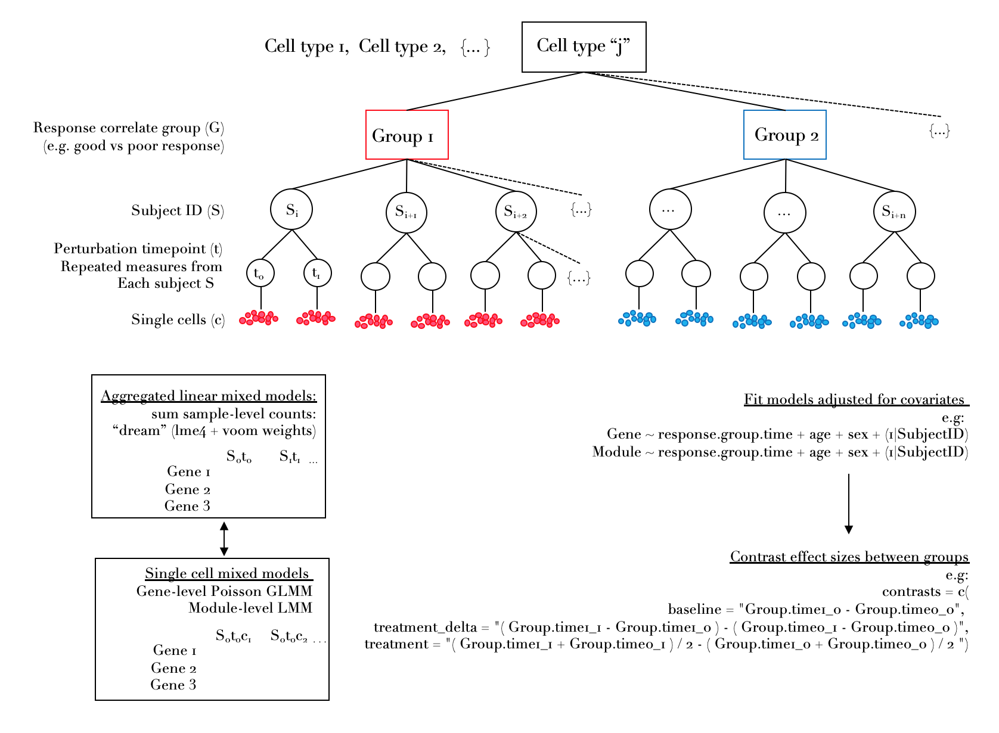

This package is under active development
An R package for analysis of single cell data collected on many individuals. The package implements both fixed and mixed effects models and can accomodate many different complex experiment designs.
This package is built around lme4 and was originally made for analysis of single cell data from multiple subjects each assayed pre- and post- perturbation such as drug treatment, nested within one or more response groups. Other simpler designs are also supported, such as mutliple individuals in different groups, e.g. healthy vs disease.
Mixed effects models enable contrasting the difference in perturbation response effects between groups while modeling variation in donor expression. This package also has many wrappers for downstream enrichment testing and visualization.
Please see vignettes
Installation
devtools::install_github(repo = "https://github.com/MattPM/scglmmr")
library(scglmmr)
Single cell within cluster perturbation response differential expression
The focus is on implementing flexible generalized linear multilevel models to derive group (i.e. good or poor clinical outcome, high or low rug response) and treatment associated effects within cell types defined either by protein (e.g. with CITE-seq data) or transcriptome based clustering followed by downstream enrichment testing and visualization.
Any number of model covariates can be specified. The vignettes provide methods where a random intercept term for the donor ID of each cell or aggregated library is incluided in the model. These methods model variation around the average baseline expression across individuals, accomodating non-independence of expression for repeated timepoints from each subject.
An overview of methods provided:
1. pseudobulk aggregated models
These functions implement wrappers around the following methods:
Limma + voom (Law et al Genome Biology 2014) - fitting fixed effect linear models.
‘dream’ – lme4 + voom”, described in Hoffman et al Bioinformatics 2020 for experiments with non-independence due to replicated measurements (e.g. multiple timepoints) from the same donor.
2. single cell gene and gene module level mixed effects models
Model variation in gene counts at the single cell and sample / donor level.
Rather than aggregating data at the sample level in to average or summed counts, this uses a Piosson generalized linear mixed effects model with a log link function to test the effect of perturbation at the single cell level across a cohort of individuals, incorporating random effects for replicated sampels from the same donor.
3. single cell module level mixed effect models
Model variation of gene module activity at the single cell and sample / donor level
This set of functions scores the activity of modules in single cells, then tests the effect perturbation across donors using a linear mixed modethe single cell level. Any model can be specified. In addition, a custom function is provided for a experiment with a single perturbation applied to donors nested in 2 response groups, due to the commonality of this experiment design in biological studies.
4. Downstream enrichment testing and visualization
There are wrapper functions around multiple gene set enrichment methods, with emphasis on the fast set gene enrichment (fgsea) package. The results from fgsea can then be further interrogated by methods for contrasting information content in genes driving enrichments within and between celltypes. Multiple visualization wrappers are also provided.
Philosophy
This package models expression within each cluster/ cell type independently in order to capture perturbation effects of cell type specific genes as well as genes that are expressed by multiple cell types. Using a normal distribution on count data requires first modeling the mean variance trend (see Law et al) this requires filtering features (genes) that are not expressed by each cell type. These cell type specific transcripts are therefore tested for perturbation effects within only in the cell types that express the genes, instead of across all cell types. Genes that are shared across cell types can be conpared for coherent perturbation effects across all subjects or between different groups of subjects using contrast coding.
This approach is particularly well suited for multimodal single cell data where cells are clustered based a independent information from the perturbation effects. For example, we have utilized methods in this package for CITE-seq data where we first denoise ADT data using dsb, cluster the cells based on the normalized /denoised protein levels, then use this package to model transcriptome within each subset for effects of pertuebation, group status or both using mixed effects models at the single cell or pseudobulk level.
Questions? Please open an issue.